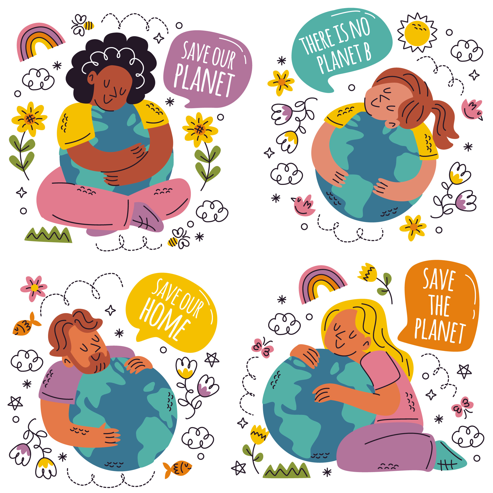

Conoce sobre esta ley de reciclaje
Que es esta ley
El polietileno tereftalato (PET) es un tipo de plástico que se utiliza principalmente en la fabricación de envases y productos diversos debido a sus propiedades físicas y químicas. El PET es un polímero termoplástico que se deriva del petróleo crudo y se procesa para obtener una variedad de productos útiles.
El polipropileno es conocido por su resistencia, durabilidad y capacidad para resistir temperaturas elevadas

Profesional

Personal Capacitado
Comprometete